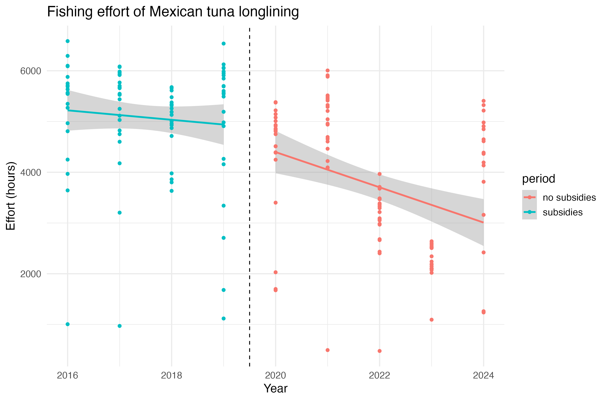
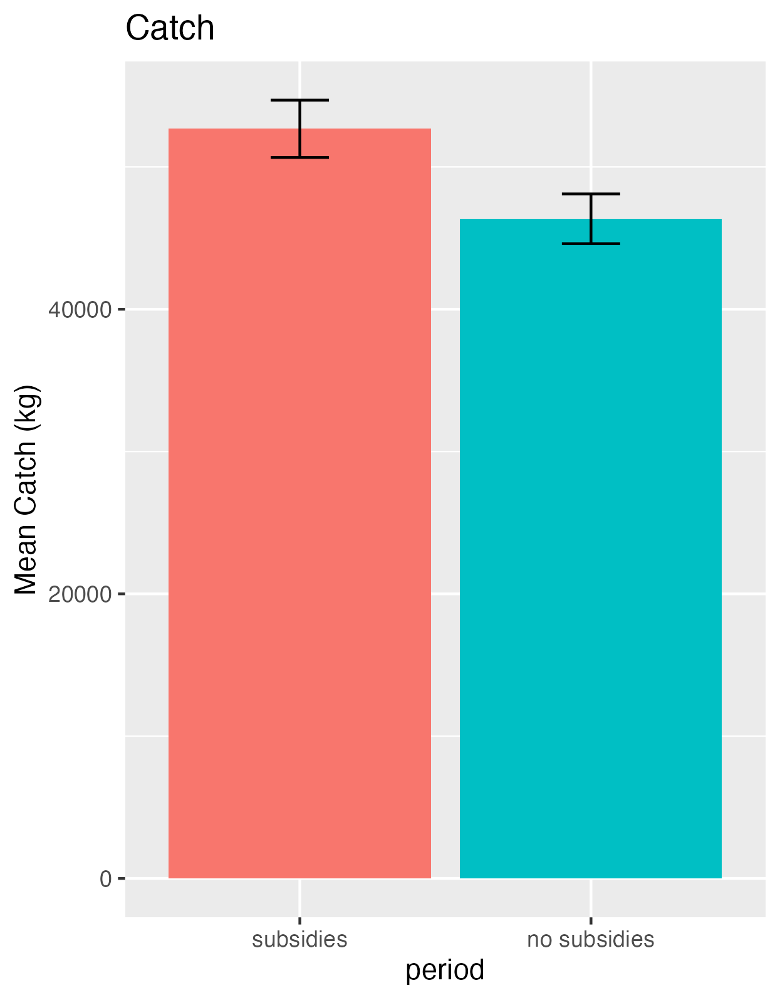
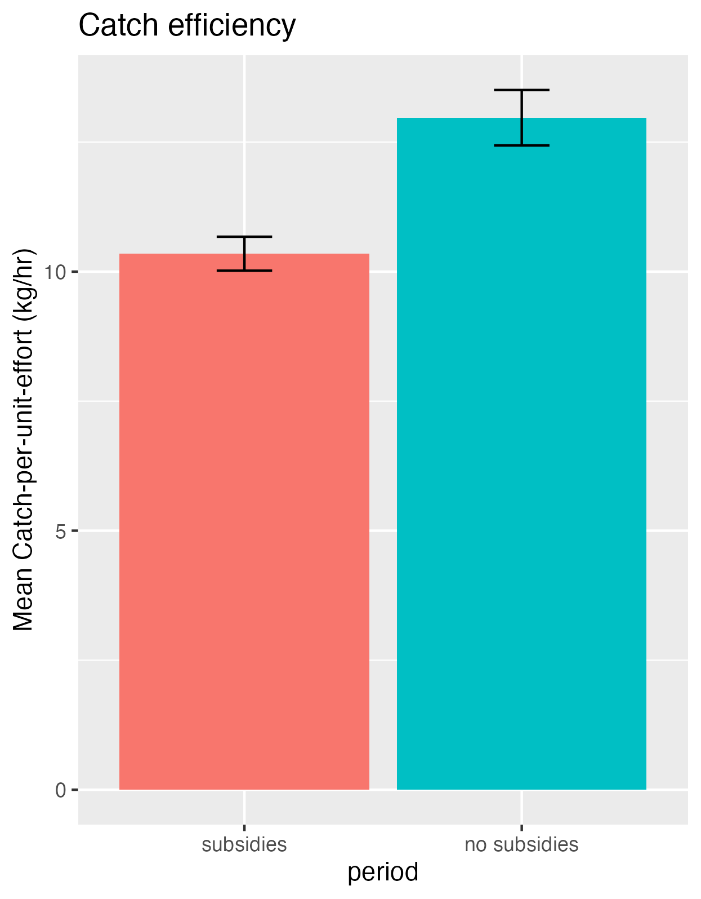
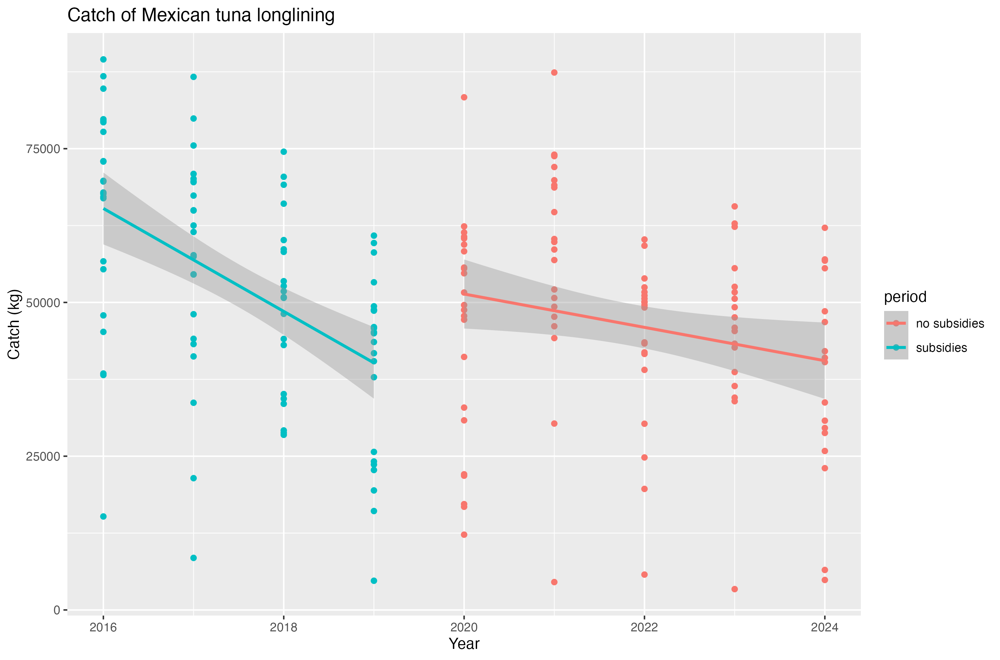
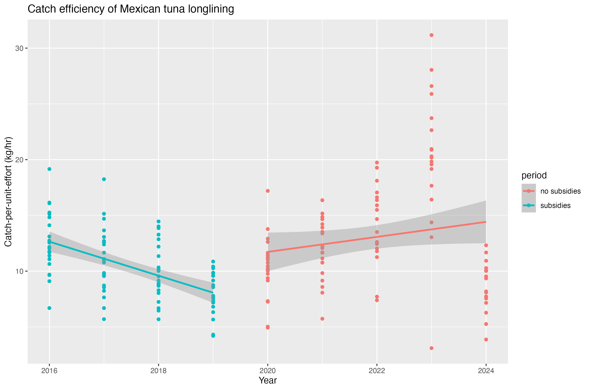
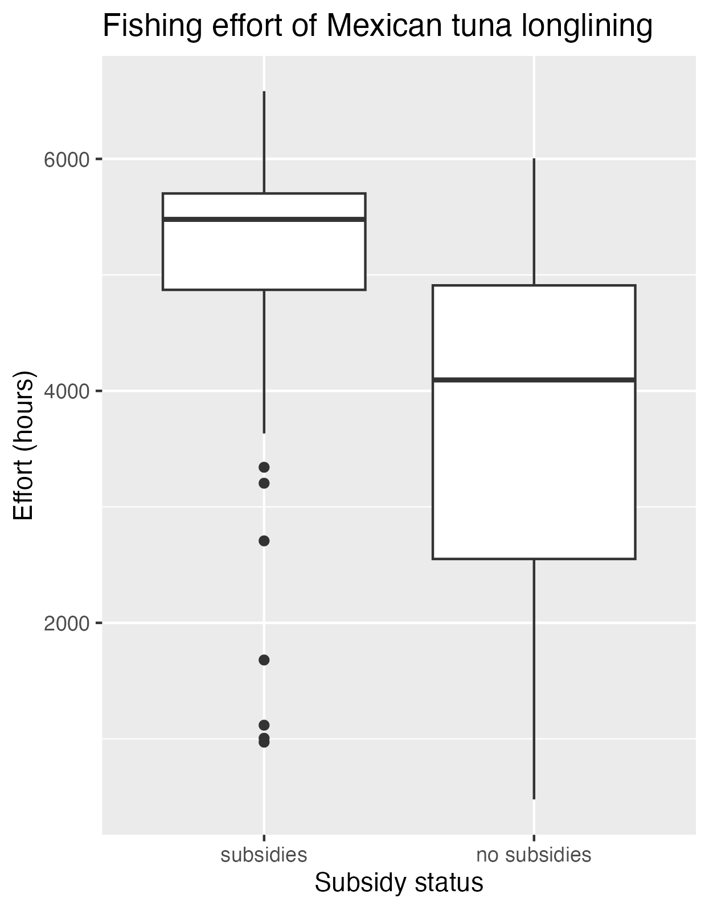

Impromptu fuel subsidy reform decreases effort by tuna longliners in the Gulf of Mexico
GCFI - Name of session here
2025-10-27
Agenda
- Motivation & Goals
- What are fuel subsidies?
- Previous work
- Relevant policy reform
- Methods
- Results & discussion
Motivation
- More than 35% of global fish stocks are being overfished
- Subsidies that encourage overfishing are a key driver of overcapacity in the fishing industry
- Subsidization is economicaly inefficient
Goals
- Understand how fishing behavior changes in response to policy
- Provide a reference for actions that decrease fishing effort
Fuel subsidies
What are fuel subsidies?
- Capacity-enhancing subsidies that directly incentivize increased effort
- Financial contributions awarded from the government on fuel that can partially determine profitability
Why should we care?
- Subsidies increase fishing effort, leading to over 60% of Mexican fishery stocks being at unsustainable levels
- Many fisheries are not profitable without subsidies
Previous Work
- Revollo-Fernández et al. (2024) estimated economic and marginal product value to establish a direct relationship between subsidies and extraction
- Sumaila et al. (2019) establishes the bulk of global subsidies to still be within the category of “capacity-enhancing” subsidies
Relevant Policy Reform
Impromptu Mexican subsidy reform
- Mexico provided fuel subsidies to its fisheries since 2006
- In 2020, it eliminated fuel subsidies for the fishing sector
- The vessels referenced in this study recieved an average of $40,000 USD in subsidies annually prior to reform
Specific Objectives
- Understand how Mexico’s subsidy reform has caused a shift in effort, landings, and catch-per-unit-effort
- Focus: tuna longline fleet in the Gulf of Mexico, heavily subsidized prior to 2020
Data sources
Subsidy data
- CausaNautra provides subsidy allocations by economic unit from 2011-2019
- Allows us to identify who received a subsidy before the reform
Vessel Montioring System
- From Mexico’s Satelite Monitoring of Fishing Vessels System
- provides vessel location, identity, and time
- 2007 - present
Vessel-level landings
- From National Commission of Aquaculture and Fisheries (CONAPESCA)
- Target species and annual weight of live catch (kg)
- 2000-present
Vessel status data
- Mexican vessel registry including vessel characteristics, gear type, and home port
Methods
Focus Area

Ramírez‑Mendoza et al.
Data processing
- VMS filtering
- 26 longline vessels (81.3% of total fleet)
- 2016-2024
- Depth > 50m, Distance from shore > 500m
- Merged with subsidy and landings data
- Calculated annual effort (hours), total catch (kg) and catch-per-unit-effort (kg/hr) by vessel
Data analysis
\[ y_{it} = \beta S_{it} + \omega_i + \varepsilon_{it} \]
- \(y_{it}\): Outcome variable for vessel \(i\) at year \(t\)
- \(S_{it}\): Variable for subsidy period (0 = pre reform, 1 = post reform)
- \(\omega_i\): Fixed effect for vessel \(i\)
- \(\varepsilon_{it}\): Error term
- \(\beta\): Effect of subsidy reform on outcome variable
Data analysis
We used a linear regression model to analyze the differences in effort, catch, and catch-per-unit-effort before and after subsidy reform
This allows for an understanding of vessel-level differences in fishing behavior and productivity
Patterns- effort
Patterns- effort, catch, and catch-per-unit-effort
 
Results
| Dependent Variables: | effort (hours) | catch (kg) | cpue (kg/hr) |
|---|---|---|---|
| Subsidized period | 5,079.47 | 52,678.63 | 10.35 |
| No subsidy period | -1,361.4*** | -8,540.4*** | 2.19*** |
| Standard Error | (190.9) | (2,285.2) | (0.617) |
| Observations | 187 | 187 | 187 |
| R² | 0.311 | 0.422 | 0.345 |
| *** p<0.01 |
- 26% decrease in effort
- 16% decrease in catch
- 20% increase in catch-per-unit-effort
Discussion
Fuel-subsidy removal can substantially curb fishing effort and reduce total catch
Efficiency of the fishery increases when marginal vessels are no longer subsidized
First vessel-level estimates of the consequences of capacity-reducing reforms in the Gulf of Mexico tuna longline fishery
Long-term impacts of reforms require further investigation to ensure sustainable fisheries management
Next steps
- Compare patterns of behavior to an unsubsidized fleet as a control group
Thank you
Aubriana Rhodes | abl141@miami.edu
Scatter plots
 
Box Plots

Effort box plots
Before and after subsidy removal